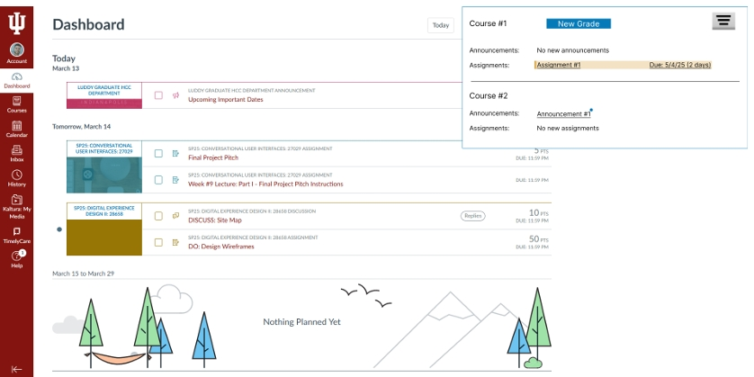

Canvas Notification Box Redesign
I designed this product UX redesign to centralize critical course updates into a persistent workflow so students would no longer need to navigate through multiple course menus to locate essential information.

Overview
In this project, I addressed a recurring student frustration in Canvas: important information existed, but it was distributed across too many course-specific entry points. Announcements, assignments, grades, and modules all required repeated navigation, which increased effort and made time-sensitive items easier to overlook.
I introduced a persistent notification workflow that aggregates updates from across courses into a single box that remains accessible from anywhere in the product.
Problem Space
I found that the core issue was not missing information, but discoverability and navigation cost. Students had to move course by course to check for changes, and the labeling patterns did not always signal urgency clearly. This created unnecessary cognitive load in a system used repeatedly under deadline pressure.
My redesign goal was to collapse that navigation overhead without breaking existing Canvas mental models.
Goals
Surface announcements, assignments, grades, and module activity from one entry point visible across the product.
Reduce common paths to key course updates to two clicks or fewer.
Preserve familiar Canvas interaction patterns so the solution felt additive, not disruptive.
Clarify status and urgency through stronger hierarchy, filtering, and accessible visual cues.
Research
In my research, I identified repeated menu drilling as the dominant workflow problem. Personas and informal interviews showed that students often moved across multiple course shells to answer simple questions such as "Do I have anything due soon?" or "Did anything new get posted?"
Methods used
- Persona development
- Informal interviews
- Moderated paper prototype testing
- AI-moderated Strella testing with three students across three tasks each
What that validated
- I learned that students preferred a unified notification workflow over course-by-course checking
- Direct linking to the destination screen reduced orientation overhead
- Status grouping made the system easier to scan quickly
Solution + Prototype
I centered the redesign on a persistent Notification Box opened from the bell icon, supported by a dedicated filter panel from a funnel icon. The box grouped activity across all courses and let students move directly to the relevant destination rather than requiring them to re-enter each course context and locate the content manually.
Interface decisions
- Unread badge on the bell icon
- Cross-course grouping for announcements, assignments, modules, and grades
- Filter controls to narrow content by type
- Underlined links for stronger click affordance
Interaction impact
- Students can see what changed before deciding where to go
- Urgent work is easier to scan and prioritize
- The notification system becomes a hub instead of a passive alert surface
Design Requirements
I also defined concrete product requirements, which gives this case study stronger implementation depth than a purely visual redesign.
- Global unread badge visible across the product
- Filter persistence so users do not need to reset preferences every time
- Cross-browser support and keyboard navigation
- Screen-reader compatibility and WCAG-aware contrast
- Urgency states using yellow for 72-24 hours, red for under 24 hours, and blue for new activity
Evaluation
Early testing showed a clear preference for the new flow. Students were able to find important updates more quickly, interpret status more effectively, and move into the correct task with less friction. I kept the design close enough to Canvas conventions that the new behavior still felt usable without a long relearning curve.
The strongest aspect of this project is how I balanced product familiarity with structural change. Rather than redesigning the entire system, I targeted a narrow but high-frequency pain point and gave it a more scalable information architecture.